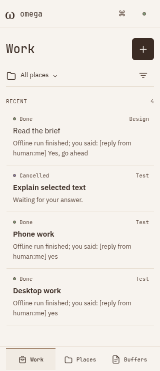
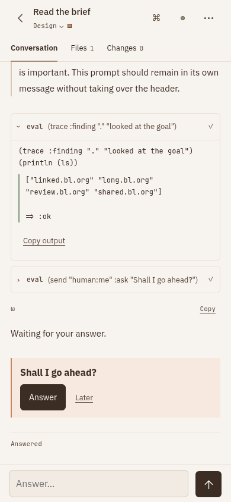

Private world, actual root tasks, real editor packages. Place → task question → files and guarded undo → reading and history → Machine → unload. Desktop, narrow and short layouts are included; this is browser touch emulation, not a physical phone test.

Terminal rows clear stale question presentation. Cancelled rows omit the contradictory waiting summary. Open questions no longer carry an “Answered” footer. The pure BL projection preserves the source task and history. Existing place/state hierarchy and touch controls carry the meaning; no extra explanatory copy was added.

The unresolved question now owns the visual state; the contradictory footer is gone.
Loading recorded results…